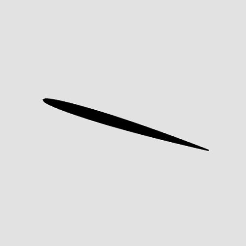

SURE CNN Project
Summer Undergraduate Research in Engineering at McGill (2020): Convolutional Neural Network using a bank of pre-processed 'artificial images' generated based on airfoil type and flow conditions to predict aerodynamic performance (Lift and Drag Coefficients). Images obtained through interpolation of the airfoil coordinates (obtained from UIUC database), rotation of the airfoil shape based on Angle of Attack and pixel coloring of image background based on free stream Mach number. CNN was successfully tested on unseen 'artifial images' generated in the same manner. Use of Xfoil for populating the database. Use of python libraries TensorFlow, Keras, Pandas, Sklearn.